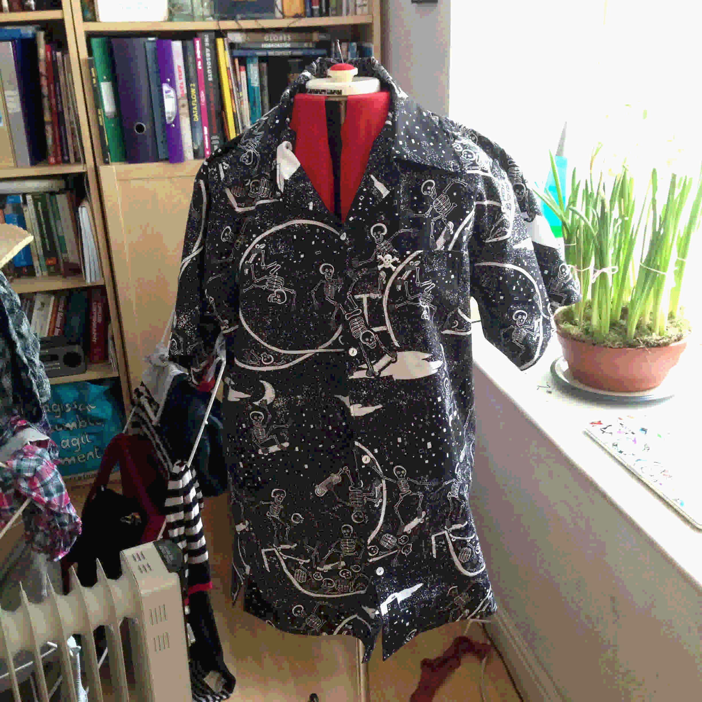

A very dear friend always remarked how much he liked my shirts, and how despite being awful, I pulled them off and they looked great. His lovely missus picked the fabric and I made him one for his birthday.
Far too big but he loved it. Refused to let me make it smaller.